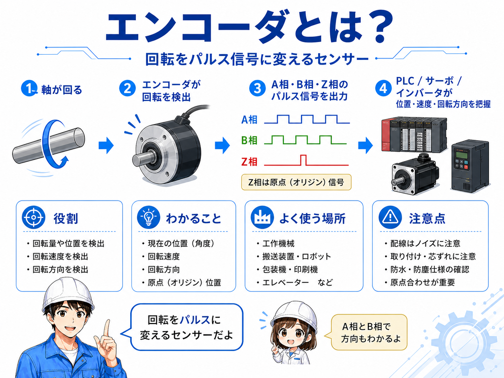
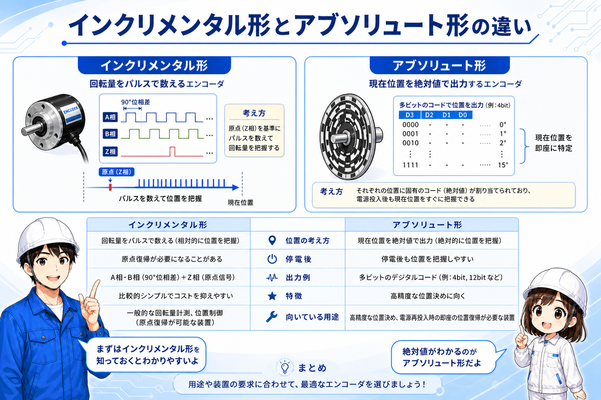
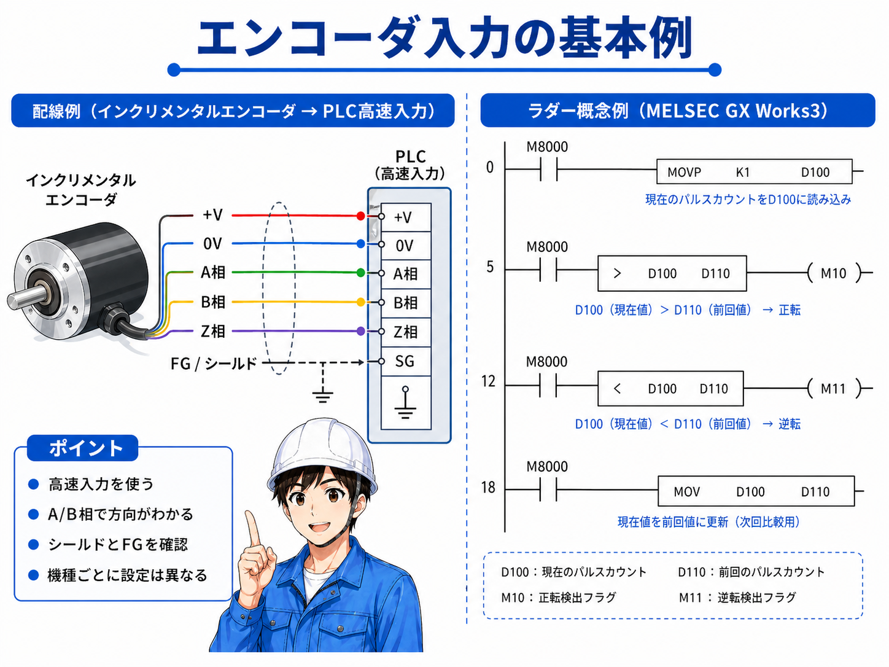
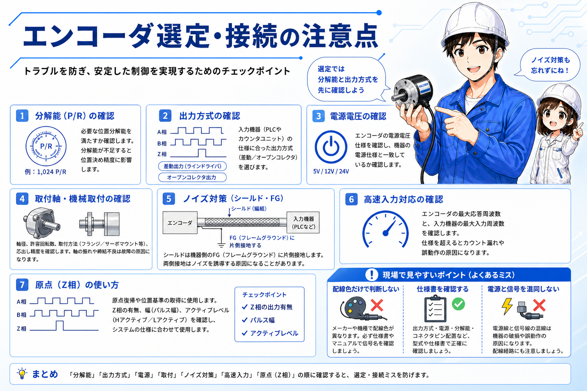

向いている人
- エンコーダの役割を初めて学ぶ人
- A相・B相・Z相の意味を整理したい人
- PLC高速入力への配線イメージをつかみたい人
エンコーダは、モータや機械の軸がどれだけ回ったか、どちら向きに回っているか、現在位置がどこにあるかを検出するための機器です。
現場では、搬送装置、包装機、印刷機、ロボット、サーボ機構、インバータ制御などで使われます。ざっくり言うと、機械の動きをPLCや制御機器が読める電気信号に変える部品です。


先輩エンコーダは「モータが回ったかどうか」だけでなく、「どれだけ回ったか」「どちら向きに回ったか」を見るために使うことが多いよ。

ちび単なるON/OFFセンサーより、動きの量を細かく見られるイメージだね。
難しく考えすぎず、最初は「軸が回る → パルスが出る → PLCやカウンタが数える」と考えると理解しやすいです。
インクリメンタル形エンコーダでは、A相・B相・Z相という信号名がよく出てきます。A相とB相はパルスを出し、2つの位相差を見ることで回転方向を判断します。
Z相は原点信号として使われることが多く、1回転に1回だけ出る信号として、原点復帰や基準位置の確認に使われます。
| 信号名 | 主な役割 | 現場での見方 |
|---|---|---|
| A相 | パルスを出力する基本信号 | パルス数を数えることで、回転量や移動量の判断に使います。 |
| B相 | A相と少しずれたパルス信号 | A相との位相差を見て、正転・逆転の判断に使います。 |
| Z相 | 原点・基準位置の信号 | 原点復帰や1回転ごとの基準確認に使われます。 |
パルス数が多いほど細かく見られますが、PLC側の高速入力性能や応答周波数を超えると、カウント漏れの原因になります。
エンコーダには大きく分けて、インクリメンタル形とアブソリュート形があります。現場でよく出てくるのは、パルスを数えて位置を把握するインクリメンタル形です。
アブソリュート形は現在位置を絶対値として出せるため、電源投入後でも位置を把握しやすい特徴があります。一方で、配線や通信、機器構成が少し複雑になることがあります。

構成が比較的シンプルで、回転量・速度・方向検出に使いやすい方式です。原点復帰が必要になる場合があります。
現在位置を絶対値で扱いやすい方式です。高精度な位置決めや、電源再投入後の位置保持が重要な装置で使われます。
エンコーダをPLCに接続するときは、通常の入力端子ではなく、高速入力やカウンタ入力を使うことが多いです。回転が速い装置では、通常入力だとパルスを拾いきれないことがあります。
また、エンコーダには電源線、0V、A相、B相、Z相、シールド線などがあり、機種によって線色や出力方式が異なります。配線色だけで判断せず、必ず仕様書で確認します。

5V、12V、24Vなどの電源仕様や、オープンコレクタ、ラインドライバ、差動出力などの出力方式が合っていないと、入力できないだけでなく故障の原因にもなります。
先輩エンコーダはノイズの影響を受けやすいから、動力線と離す、シールドを正しく処理する、FGを確認する。このあたりがかなり大事だよ。
ちび配線が合っていても、ノイズでカウントが飛ぶことがあるんだね。
エンコーダは「とりあえず回ればよい」という部品ではありません。分解能、出力方式、電源電圧、取付方法、最大応答周波数、Z相の有無などを装置側の要求に合わせて確認します。

P/Rの値が装置に必要な位置精度を満たしているか確認します。細かすぎてもPLC側の処理が追いつかないことがあります。
NPN/PNP、オープンコレクタ、ラインドライバなど、PLCやカウンタユニット側と合う方式を選びます。
動力線と分ける、シールド線を適切に処理する、FGを確認するなど、誤カウントを防ぐ配線を意識します。
エンコーダの最大応答周波数と、PLC側の高速入力・カウンタ入力の仕様を合わせて確認します。
同じエンコーダでも、メーカーや型式によって線色、出力方式、Z相の有無、シールド処理の考え方が異なります。配線前に型式と仕様書を確認することが大切です。
エンコーダは、回転や位置をパルス信号として出力し、PLCやサーボ、インバータなどが機械の動きを把握するために使うセンサーです。
まずは、A相・B相で方向や回転量を見て、Z相で原点を扱うことが多い、と覚えると理解しやすくなります。配線では、電源電圧、出力方式、高速入力、ノイズ対策を必ず確認しましょう。
エンコーダは「回転をパルスに変える部品」です。インクリメンタル形とアブソリュート形の違い、A相・B相・Z相の役割、PLC高速入力への接続注意を押さえると、制御盤や装置の信号の流れが追いやすくなります。